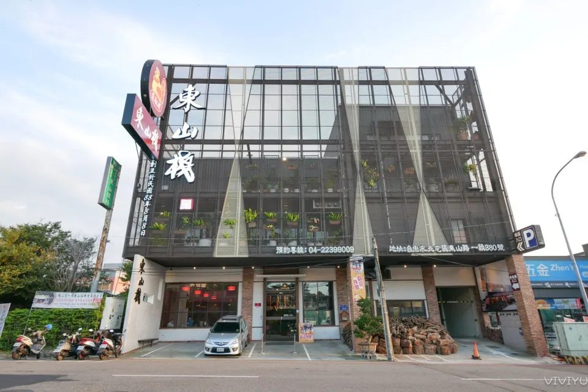

地址:台中市北屯區東山路一段380號(振宇五金旁)本店備有專屬停車場
預訂電話:04-2239-9009、04-2437-8772、0911457718
營業時間:上午11點至晚上9點30分

『東山棧甕缸雞』餐廳交通很方便，就在大坑風景區、紙箱王與東東芋圓附近，更是前往新社花海必經道路。餐廳後方有超大停車場，開車前往用餐也很方便。
榮獲2009年「大坑第一味」的寶座，更於2020年、2021年及2022年獲得世界級米其林肯定，成為全台灣第一間登上「米其林指南必比登推介」的甕缸雞餐廳。
這份椒鹽口味的透抽，也是相當值得推薦的美食，海鮮新鮮肉質Q彈沒話說，切的很大塊有著滿滿咬勁，搭配杯啤酒絕對是完美組合。